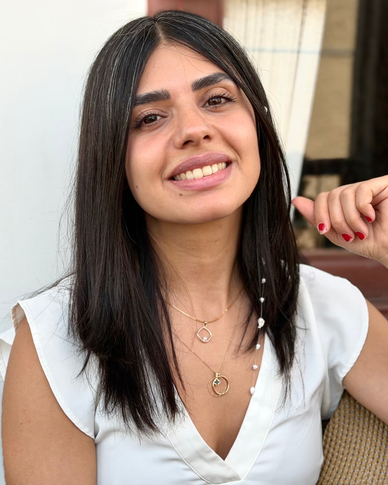

About
Mojdeh Mirzaei
Mojdeh Mirzaei is a visual artist and a graduate of Graphic Design with a specialization in Illustration from the University of Applied Science and Technology. Her academic education marked the beginning of a profound engagement with narrative, form, and structure — elements that gradually became the foundation of her visual language and artistic way of thinking.
Biography
After graduation, she worked as a painting and illustration instructor for children while also pursuing graphic design projects. In 2016, she was commissioned to illustrate a psychology book that was never published. Although the project remained unfinished, it profoundly transformed her intellectual trajectory, initiating an ongoing inquiry into the certainties of life, human relationships, loss, and lived experience — an inquiry that continues to form one of the central foundations of her artistic practice.
Over the following years, Mirzaei's visual language gradually moved beyond conventional illustration toward a more personal and expressionistic mode of expression. Her experience working in a contemporary art gallery, together with solo travels, encounters with diverse cultures and human narratives, and sustained engagement with contemporary art, deepened her understanding of the relationship between the self, the other, and the surrounding world. More than anything, what shaped her artistic path was the continued search for an authenticity rooted in inner experience and an attentive observation of the world.
Today, her artistic practice moves fluidly between drawing, painting, sculpture, and a range of other media, allowing each idea to find its most appropriate form of expression. Her work is an honest attempt to articulate personal emotions beyond inherited familial, social, and cultural frameworks, engaging with lived experience, memory, human relationships, loss, and transformation. She believes that clarity in understanding oneself makes possible a more attentive, responsible, and ethical way of seeing others.
Exhibitions
- 2021Revive, group exhibition — Dooraan-e Moaser Art Gallery, Isfahan
- 2015Gilgamesh, solo exhibition — University of Applied Science and Technology, Isfahan
- 2013The Little Fire and the Little Girl, book show — University of Applied Science and Technology, Isfahan
Education
- 2013–2015BA, Graphic Design and Illustration — University of Applied Science and Technology (UAST), Isfahan
- 2010–2013Associate, Graphic Design — UAST, Naghsh-e Jahan Center, Isfahan
Experience
- 2023–2025Independent mirror mosaic artist — commissioned installations for residential and commercial interiors, including large-scale projects in hotels and restaurants, Isfahan
- 2021–2023Independent ceramic and sculpture artist — a cohesive clay-based sculptural series through hand modelling and firing, Isfahan
- 2019Mural artist — site-specific commission for a private residential interior, Isfahan
- 2017–2020Assistant to the Executive Director, Matn Contemporary Art Gallery, Isfahan — curatorial planning, exhibition production, scheduling and installation
- 2014–2016
2024–Freelance graphic designer — portfolio layouts and visual materials for artists and independent clients, Isfahan
Teaching
- 2025–2026Mirror mosaic workshop instructor — Hue Studio (Open Art Studio), Isfahan. Iranian geometric pattern systems, mirror-cutting, material preparation and installation
- 2017Art and illustration instructor, children's programme — Behnegar Technical & Vocational Art Institute, Fooladshahr
- 2017Community-based art facilitation — volunteer drawing workshop for children, Sarmad Charity Institute, Isfahan
Training & Workshops
- 2025–Painterly Life — Khat Sevvom Visual Arts Academy, with Bahareh Babaei
- 2025–Fundamentals of Colour Theory — Khat Sevvom Visual Arts Academy, with Amir Monfared
- 2023Spatial Composition in Illustration — with Kamal Tabatabaei
- 2023Persian mirror mosaic (Ayeneh-kari) — Kashaneh Honar Visual Arts Academy, with Alireza Azar
- 2020Portrait Sculpture in Clay — with Ehsan Ziaei
Research Interests
- Myth-informed visual narratives
- Psychological fragmentation and symbolic reconstruction
- Object recontextualization and spatial memory
- Iranian mysticism and Eastern philosophical perspectives
- Embodiment, psychological tension and narrative symbolism
Skills & Languages
- StudioPainting · Drawing · Illustration · Printmaking · Object-based practice · Clay sculpture · Mirror mosaic
- ProjectsExhibition planning · Artist and client communication
- ToolsAdobe InDesign · Illustrator · Photoshop
- LanguagesPersian (native) · English (working proficiency)